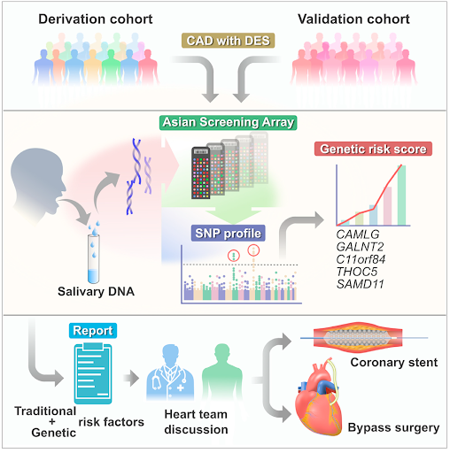

困境4：我如何找到支架比較容易再狹窄的病患？
解決方案：
將成醫生醫-影像與基因資料庫加以分析，針對不同族群，運算出高危險病患，以其危險度判斷治療策略。
閱讀原文↷
<榮獲 第 18 屆國家新創獎>
項目簡介
<榮獲 第 18 屆國家新創獎>

基因檢測篩選適合做塗藥支架的病患
優勢:
精準預測日後發生支架內再狹窄的機率，讓病人選擇最適合的手術
使用方式:
基因檢測僅需使用病患口水，即可以進行基因檢測